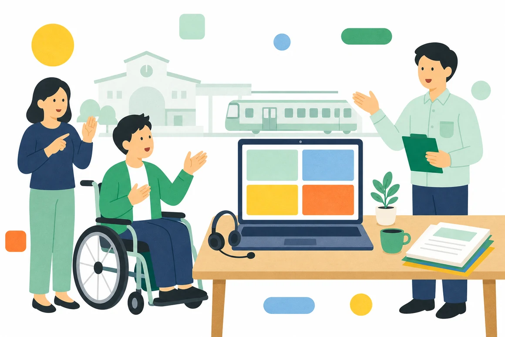
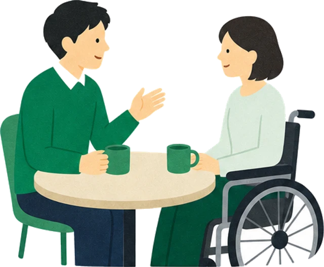

碧原鉄道しごと発見セミナー
駅、車両基地、本社オフィスで働く社員が、一日の流れと、実際に使っている配慮をそのまま見せます。会社の説明は短くして、時間の半分以上を質問にあてています。

駅、車両基地、本社オフィスで働く社員が、一日の流れと、実際に使っている配慮をそのまま見せます。会社の説明は短くして、時間の半分以上を質問にあてています。

参加は無料です。服装は自由で、履歴書もいりません。どの回も、参加したかどうかは選考に関係しません。
オンラインは手話通訳と文字支援つき。会場の定員は20名です。
定員は20名です。終了後、希望する方は駅の事務室を見学できます（約20分）。
定員は15名です。構内は一部に段差があるため、車いすで参加する方は申込時にお知らせください。通れる順路をご案内します。
しごと発見セミナー（60分）の流れです。途中で抜けても、カメラを切ったままでもかまいません。
18:00
五つの事業と、障がいのある社員が働いている職種を10分で紹介します。
18:10
駅係員、運行データの点検、採用事務の社員が、出勤から退勤までの流れと、職場で決めた調整を話します。
18:35
声でも、チャットでも質問できます。名前を出さずに聞くこともできます。
18:55
エントリーの方法と、職場見学の申し込み方を案内します。
申込フォームで、必要なものを選んでください。費用はかかりません。ここにないことも、ご相談ください。
オンラインでも会場でも、手話通訳者がつきます。画面の配置や座席の位置は先に決めておきます。
話している内容を、その場で画面に文字で出します。終了後に、内容をまとめた資料をお送りします。
会場は段差なしで入れます。机の高さを合わせた席と、近くの多目的トイレをご案内します。
ご家族や支援機関の方と一緒に参加できます。付き添いの方の申し込みは不要です。
オンラインはカメラとマイクを切ったまま参加できます。質問はチャットで受けます。
体調に合わせて、いつでも休憩や途中退出をしてかまいません。会場には休憩用の別室があります。
セミナーの日に都合がつかない方や、特定の職場を見たい方には、個別に見学の日を設けています。平日の10:00〜16:00の間で、1時間ほどです。見たい職場と、気になっていること（音、段差、移動の距離など）を教えてください。その点を中心に案内します。

途中からの参加も、途中での退出もできます。録画はしていないので、聞き逃したところは採用事務局へお問い合わせください。
参加できます。学年や卒業の時期は問いません。
参加しなくても応募できます。ただ、職場の音や明るさ、移動の距離は資料では伝わりにくいので、見学だけでもおすすめしています。